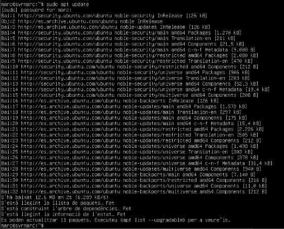
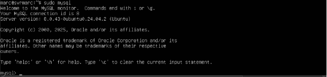
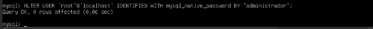
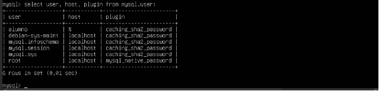
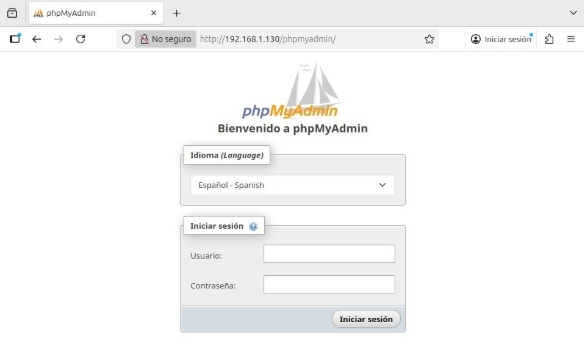
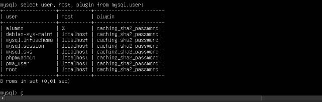
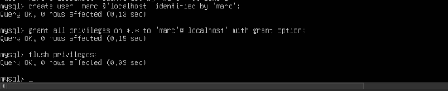
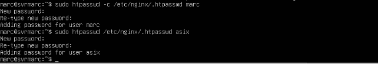
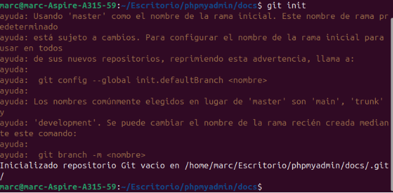

Documentació
UD2 – PRÀCTICA 4
Marc Brines Bañuls 2 ASIX IAW
Abans de començar amb instal·lacions anem a actualitzar el server per si hi ha paquets a actualitzar nous.

Fig 1: Update a la màquina server.

Fig 2: Upgrade de la màquina

Fig 3: Instal·lació de les ferramentes necesaries.

Fig 4: Ens asegurem de que funciona.

Fig 5: Agafem el usuari root i establim un tipus de contrasenya i una contrasenya.

Fig 6: Apliquem els canvis.

Fig 7: Verifiquem les pases anteriors.

Fig 8: Creem el usuari dedicat al phpMyAdmin.

Fig 9: Instal·lem el phpmyadmin i durant la instal·lació hem de sel·leccionar apache2.

Fig 10: Fiquem que si al pas de l’imatge.

Fig 11: Fiquem una contrasenya al phpmyadmin.
Editem el fitxer de configuració del defaut, i enves de descomentar, he afegit el text següent per a previndre falles.

Fig 12: Afegit al default

Fig 13: Reiniciem el servici i comprovem.

Fig 14: Altra comprovacio de altra forma.
Des d’altra màquina conectada a la red del server entrem al navegador per a comprovar que ha funcionat tota la configuració anterior i ens apareix la GUI de phpmyadmin.

Fig 15: Comprovació.

Fig 16: Fiquem usuari root i contrasenya que hem establit abans.

Fig 17: Cambiem el metode de autenticació de root.

Fig 18: Comprovació.

Fig 19: Ara anem a crear un usuari per a gastar. Després d’instal·lar el htpasswd anem a emmagatzemar credencials de dos usuaris.

Fig 20: Fiquem dos usuaris.

Fig 21: Editem el site de nginx i afegim la 4 i 5 línea.
Una vegada acabem fem per terminal es següent comandament, i per a comprovar anem al phpmyadmin GUI i recarreguem on deuria de demanar-nos noves credencials.

Fig 22: Carreguem el nginx.

Fig 23: Iniciem amb el nou usuari que hem guardat anteriorment.

Fig 24: Afegim seguretat al fitxer de la contrasenya.
Ara anem a fer una guia també pas a pas per a pujar aquest projecte al github pages com feem anteriorment, com sempre, abans de res anem a crear el repositori a github.

Fig 25: Creació del repositori.

Fig 26: Creació del directori.

Fig 27: Creació del index.
Marc Brines Bañuls 10 ASIX IAW
10

Fig 28: Inicialització del repositori.
Falta el git add . Que no m’he donat conter de la captura i el commit.

Fig 29: Pujem la branca i conectem repositori.
Fig 30: Pujem el fitxer. I fem un mkdocs gh-deploy per a les pages.
Com durant la instal·lació no he fet servir els scripts ja que no se fer-los i per no copiar directament, ja que he seguit els pases de la web, vaig a ficar al mkdocs un enllaç on durà a escripts que diu la pràctica per a automatitzar punts de la instl·lació i configuració. Marc Brines Bañuls 1 ASIX IAW
1